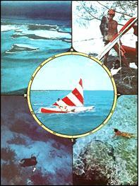
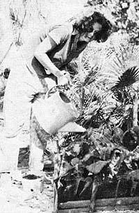
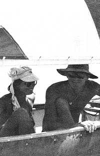

It's that time of the year again. The time when early winter's crispness and the novelty of those first downy snowfalls rapidly begins to turn into the monotonous, gray, icy sludge and slush of late January, February and early March.
Wouldn't it be great to trade this whole mess in on kind of carefree, come-and-go-as-you-please, beachcombing life in the tropics? Wouldn't that be great!? Impossible, of course, here in the late 1970's, but, nonetheless, great!
"Yes, it is great," say Ida and Barry Little, "but not at all impossible. Because that's exactly the way we've lived for the past three years, and we've done it all on far less money than you'll probably believe possible!"
My husband, Barry, and I enjoy independent and isolated nomadic living. So we really thought we had it made 11 years ago when we kicked over the traces, bought a 40-foot ketch, and began island hopping up and down the West Indies and along the northern coast of South America.
Eight years later, however, we'd both had our fill of that way of life. The ketch was a constant expense and every safe anchorage for a boat of that size, we'd found, was too populated by curious natives and/or other ships and yachts for our tastes.
"There must be a better way," we told ourselves. "There must be a way for us to enjoy an endless round of sailing, swimming, fishing, shelling, contact with wildlife, and - most important of all - solitude and privacy. And there must be a way for us to do all this on little more than pennies a day."
And that's exactly what we've done for the past three years. We've come and gone as we pleased throughout the Caribbean with summer side-trips that have taken us as far north as Ontario's Wilderness Lakes region. We've sailed and swum and snorkled and fished and shelled and beachcombed and otherwise luxuriated in the wonders of some of the earth's most beautiful places. And we've done all this for day after wonderful day after glorious day. In blissful solitude and privacy. And on the very thinnest of thin shoestrings.
Our secret? We've combined the advantages of land camping with the mobility of sail, and come up with a way of life that, for us, has none of the irritations or drawbacks of either.
We made the major breakthrough into our new life of low-cost and far-ranging abundance when we sold our 40-foot ketch (which was a constant financial drain and which would never slip into the really isolated bays, inlets, and shoals we like to explore anyway), and bought a 17-foot canoe instead.
Yes, canoe. Barry and I have traveled in and lived out of a canoe now for almost every day of the last three years. And we wouldn't trade our new life for anything. There are canoes and there are canoes, however, and if you want to duplicate our success, we think you'd do well to heed our advice when you go shopping for this vital piece of your wayfarer's equipment.
The most common and least expensive canoes available are made of aluminum. Forget such models for extended cruising. They're cold to the flesh, noisy on the water, too fragile for use around coral, and difficult to repair in the field. Fiberglass is warmer and quieter, but still too prone to coral punctures and sand abrasion. And wood, while quite good, needs more regular maintenance than we're willing to give it.
What you want is a canoe made of ABS plastic. Ours is a 17-foot Chippewa model (that we've fondly named Manatee, or "sea cow") made up for us by Mr. Deane Gray of the Old Town Canoe Company in Old Town, Maine. It weighs only 70 pounds, is warm to sit on and is tough.
At one time or another during the past three years, we've used a crane to pick the canoe up by the ends when it was fully loaded with 1,000 pounds of gear, left it out all night (again, fully loaded) banging against sharp coral reefs, and otherwise "put Manatee through the mill." Yet the little craft still shows only minor dents and scratches and has, to date, required absolutely no maintenance.
What's more, our ABS canoe wouldn't sink even if we could somehow manage the impossible and break her into little pieces (this particular variety of plastic always floats). And if we ever do find a way to make a major dent or puncture in Manatee's hull, we'll simply repair it - quickly, easily and right in the field - with a little kit of supplies that Old Town included when we bought the boat.
Our 17-foot Chippewa is also versatile. It has the highest bow (25") and the most center freeboard (15") of any commercially available canoe. We ordered Manatee with a full deck cover of rubberized dacron and a 55-square-foot lateen sail. If we have to, we can take the ole girl out on days when wind and waves occasionally bring a moderate amount of water over the bow, and, in calmer weather, we've used the sail to move us hundreds upon hundreds of miles without spending a nickel on an engine or fuel and without once dipping an oar into the water. And when we get to where we're going, the two of us - with no additional help - can lift the tiny boat and slide or roll it onto a beach.
In short, we owe most of our newfound freedom to our little 17-foot ABS canoe. Thanks to the craft, we can come and go as we please while "the sea supports the load, and the wind moves it along." Manatee allows us (unlike land-based backpackers) to indulge in unlimited nomadic travel without once suffering back strain. Without, in fact, even having to "paddle our own canoe," except for the few times when we've foolishly let dying trade winds leave us stranded some distance offshore.
And the price is certainly right! We never spend a penny for an engine or fuel, and Manatee only cost us S1,000 (as opposed to the $15,000 we were set back by the purchase of our 55-year-old 40-foot ketch). Surely this canoe is the best investment we've ever made.
We spent the first couple of months that we owned Manatee just practicing the art of sailing her. And we quickly learned that, although the little canoe carried only 55 square feet of sail, she responded with a great deal more sensitivity than our former ketch (with its 1,000 square feet of sail) had ever done. It was a struggle, in fact, to keep from capsizing our new boat in the beginning!
A little practice, though, soon taught us the fingertip control we needed, and it wasn't long before we were both maneuvering Manatee in and out of impossibly tight situations with a deft touch.
Once we had a boat - which told us how much we could carry - we began to think about choosing our main cruising grounds, which would tell us what to carry.
That choosing wasn't really too difficult. Barry and I both loved the long white beaches, clear water and abundance of sea life among the bright coral reefs of the Bahama Islands. A few afternoons in the library, spent, in large part, poring over Harry Kline's Yachtman's Guide to the Bahamas and other references to the geography and climate of these islands - was all we needed to help us make up our minds.
Contrary to what most outsiders think, the 700 or so islands in the Bahamas are mostly dry, barren, and deserted. Most of the people who live there have migrated to the cities of Nassau and Freeport and to a few small settlements on what are popularly referred to as the "Out Islands". This was just fine with us since it meant that we'd find plenty of solitude as we cruised the Bahamas.
We also knew we'd be able to do that cruising in comfort since, as we learned to our joy, the temperature of the Bahamas averages 77 degrees (just right for stripping down to birthday suits!) during the winter months.
And we figured we could cruise the Bahamas in safety, since most of the islands lie so close together that, as it's turned out, we can hop right down the whole string of beaches with only a couple of "dangerous" 30-mile-long passages to negotiate. Most of the time, we do our sailing while hugging one shore or another and darting in as we desire for a closer look at interesting items on the beach. (If you've ever been forced to stand a half mile off a coast while cruising in a deep-draft boat, you'll understand, and probably envy-the freedom our little canoe gives us.) The Bahamas are ideal for this kind of small craft island hopping.
As soon as we decided that we'd be spending most of our time canoeing up and down the Bahamas, we began assembling the equipment we'd need to make ourselves as self-sufficient as possible under the conditions we'd find in those islands.
Although any tent is better than none, I suppose, we've found that only the lightest, tightest and roomiest is good enough for our nomadic way of life. Spend what you have to, but get the best you can buy.
We started out with a two-person tent but, since we live in such a shelter year-round, soon determined that we needed something bigger, something with enough room for a "library" and "playroom"! We finally settled on a four-person, insect-proof model that weighs only five pounds and packs into a roll which measures just six inches in diameter and 12 inches long. It was manufactured by our friends, the Stephenson family (22 Hook Road, Gilford, New Hampshire 03249), and we recommend it highly. .
A stainless steel grill, a small stove (for those woodless and rainy climes), a set of nesting aluminum pots, a large frying pan, four 5-gallon water containers (salvaged from alleyways behind hospital laboratories), a plastic water bed for additional storage (remember, it's dry in the Bahamas!), and miscellaneous knives, forks, spoons, cups, plates, etc., make up our kitchen gear. This, plus a small typewriter, a camera, film, paper, books, charts of the islands and our copy of Kline's Guide, cost us about $500 altogether and is all kept stored in a big ice chest.
Our initial stock of dried soup, powdered juices, milk, sugar, flour, yeast, rice, oatmeal, grits, cooking oil, coffee, spices, Wagner's tea, rum and other foodstuffs ate up another S150 of our original grubstake and was stowed - their replacements still are - in two duffel bags. (And don't make the mistake of limiting yourself to some sort of self-imposed Spartan diet that you don't really enjoy if you do take up our type of nomadic life. You're out to have fun, remember, not to "rough it" or "prove" anything.)
And then there's our diving equipment: snorkels, masks, fins, spears, Hawaiian slings (which propel the spears like arrows) and wet suits. All of which cost us another $250.
We already had most of the clothes we wear (nothing fancy, since we live so casually), bedrolls and other miscellaneous items that we use from day to day. We probably spent only an additional $100 or so stocking up on such gear when we embarked upon our new life.
Everything considered - canoe, tent, cooking accoutrements, food, diving equipment, books, typewriter, clothes, etc. - we didn't tie up any more than about $2,000 in "fresh" money when we took up our cruising existence.
Although I've stressed the nomadic elements of our life, Barry and I don't really cruise all the time. As the mood strikes us, we like to settle down on one or another of the many tiny, remote cays (pronounced "keys") in our islands for three or four months at a stretch. We may, of course, use our canoe for short excursions almost every day during one of these periods, but we really aren't going anywhere important and we know that we'll be back to spend the night at our semi-permanent home.
The only fresh water we have during one of these sojourns is the supply we collect in little potholes (which we dig) from passing rain squalls. And, despite the fact that there's never much loose soil on our tiny Bahama atolls, I like to scrape up what I can and put it into a five-foot by three-foot by ten-inch-deep plastic box for a garden. I mix dead leaves and pine needles into the sandy dirt to raise its acidity and plant carrots, tomatoes, squash, green peppers and lettuce (none of which are ever worth the effort) and either Chinese or Jersey Wakefield cabbages (which, if watered daily and shaded from the mid-day sun, mature in two months, but never head). Someday I'm going to learn how the natives grow such nice pineapples, sweet potatoes, cassava, guava, sugar cane, sours (local oranges), peppers and other fruits and vegetables down here.
Then again, maybe it's better if I just let the folks who know about farming take care of the fruits and vegetables while Barry and I concentrate on spearfishing. Many of the people we meet while cruising are afraid of the water and only too glad to accept a few of our fish and lobsters in trade for sweet potatoes that melt in the mouth, tomatoes which are a meal in themselves, and other homegrown taste delights. Barter wins again!
Barter or no, there are times when we find ourselves in need of a little ready cash, and we have two main ways to scratch that itch.
First, we freelance articles and photographs (just like the article and photos you're now looking at) about the free and easy life we enjoy. And, second, we've become skilled enough at diving for spiny lobsters to work with local Bahamian divers for $5.00 an hour. Neither of these pastimes earns us an overwhelming amount of money, but then we live modestly and there aren't many 7-11 stores to tempt us into spending our few shekels out on the cays.
Our main dietary staple is fish and, cruising or stopped, we dive and spearfish two hours every day. (When cruising, we always make camp around 2:00 p.m. so we'll have plenty of time to go out and hunt up our supper from the nearest reef. We just roll Manatee up on a beach with the help of a couple of boat bumpers - inflatable cylinders 20" long by 6" in diameter - and unload all our gear except for the diving equipment. Then we sail to a likely looking reef - it's easy to see the orange coral, purple sea fans and yellow fish through the clear water - and get on with our fishing.)
Diving twenty or thirty feet to search the intricate coral for fish and crawfish always rewards us with enough food for both supper and the next day's lunch. So we return to camp, pull Manatee up above the high-tide line, and park the canoe under a coconut or casuarina pine tree. Then either I fillet and cook the evening meal while Barry pitches the tent, or vice versa. (We take turns so that each of us will always appreciate what the other is doing.)
About that time, we might take a break to play a game of "Go" or write letters or take a walk along the beach to watch an osprey do its afternoon hunting. By the time the sun goes down, we're relaxing in our hammock and enjoying a ritual round of rum-lime cocktails and peanuts.
As the twilight darkens, we move into the tent, bringing with us the fried grouper steaks from the grill. Dinner by candlelight then follows as a sea gull outside the shelter delights in her feast of fresh fish carcass. Finally, a few pages of a Conrad adventure sets the mood for pleasant dreams.
"But don't you ever get bored?" we're often asked.
No, we don't. We both entertain ourselves easily alone and together. We both sail Manatee, dive, cook, read, write, play "Go" and chess, take pictures and watch and sometimes tame the mockingbirds that live on the cays we visit.
Our little boat takes us off the beaten path to uninhabited and ill-charted islands that no one else ever visits. And, once Manatee is securely beached and our tent is pitched in the shade of an Australian pine, we're free to explore untrod beaches to our hearts' content, free to take all the time we want delighting in the shells, birds and other little treasures we find. If anything, the days are a little too short.
If the days are never quite long enough, though, we love 'em just the same. Perhaps because we're living exactly the way we please, with as much solitude, privacy and sea-washed sand as we can possibly enjoy.
And, whenever we do get lonesome for other humans or want to replenish our stock of bartered or store-bought food, we're never more than a short, refreshing sail from a small and friendly settlement. It's no trick at all to pick up the latest news, a little gossip and all the provisions we want, and be back on our own private little cay that same day. Ain't life wonderful!
Perhaps you'd like to carve out such a free and easy existence for yourself too. And I see no reason why you shouldn't be able to do exactly that, if you can come up with the necessary original (and quite reasonable) grubstake, you can learn to handle a sailing canoe like ours, and you're physically up to our camping/fishing/swimming/diving/beachcombing way of life. Practice until you're as adept on the water as we are, figure out a way to supply yourself with at least as much money as the minute income we get by on, and give our "endless vacation" a try.
Come on in! The (Bahama) water's fine!
|
 |
 |
 |